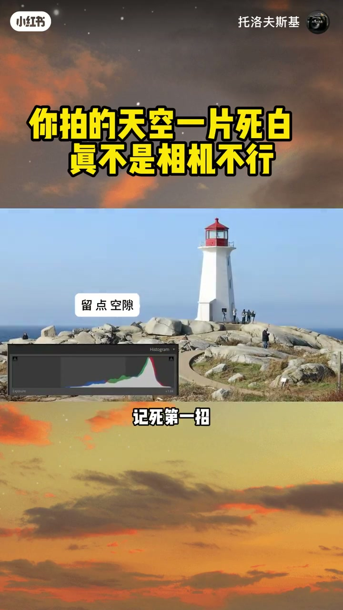
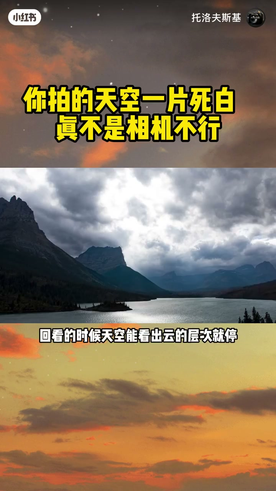
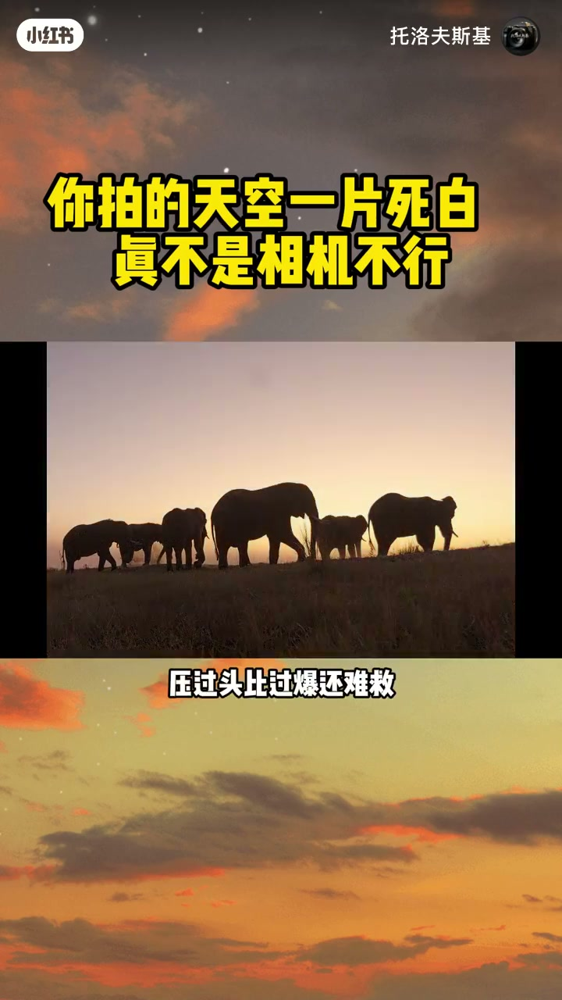
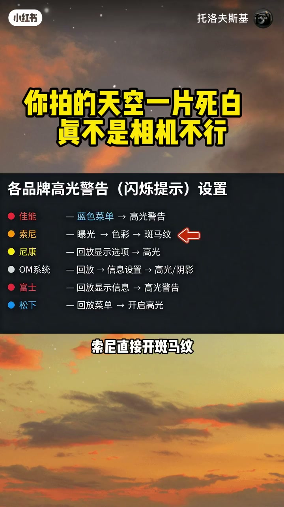
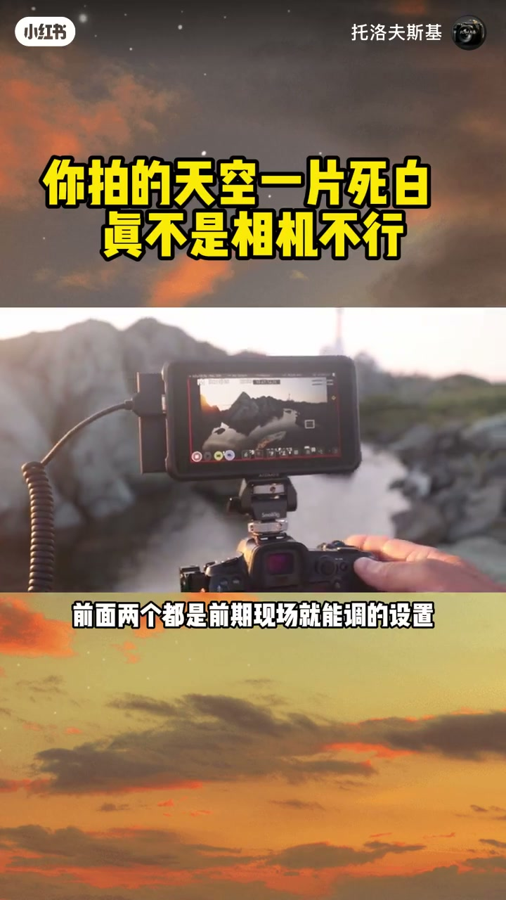
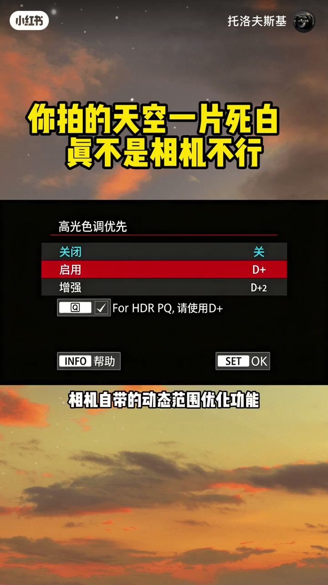
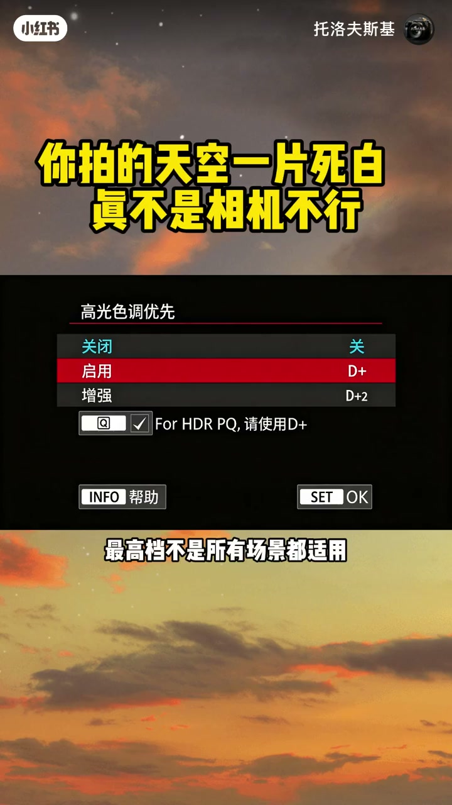
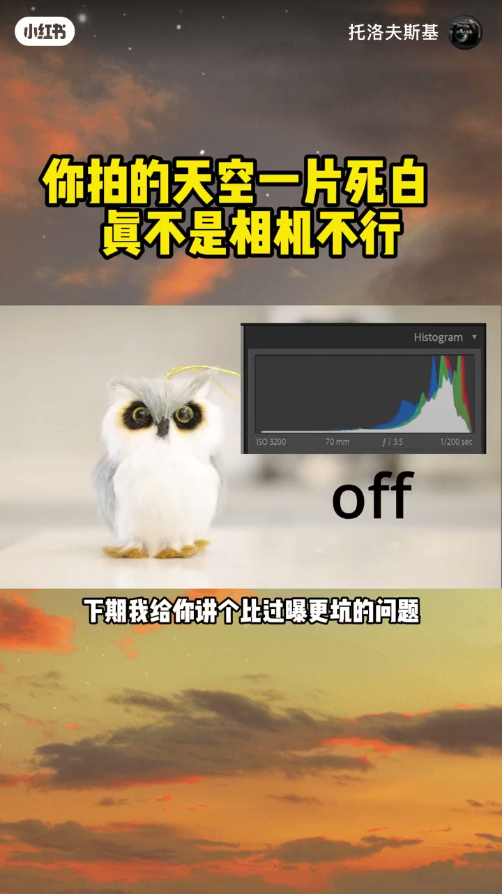

内容要点
「你拍的天空一片死白，真不是相机不行」教程要点：你拍的天空一片死白 → 真不是相机不行 → 是你从买相机那天起 → 就被默认设置给带偏了；详见正文。
知识结构
你拍的天空一片死白
压过头比过曝还难救
只要高光没有彻底减掉
- 你拍的天空一片死白
- 真不是相机不行
- 是你从买相机那天起
- 就被默认设置给带偏了
- 我拍了15年的风光
你拍的天空一片死白
00:00–01:10你拍的天空一片死白
你拍的天空一片死白；真不是相机不行；是你从买相机那天起；就被默认设置给带偏了；我拍了15年的风光；大中午顶光拍云；层次照样拉了开；今天三个核心设置；全给你说透；祭祀第一招；拍天先保高光；别上来先想着把人拍亮；把树拍清复；相机眼睛没人眼灵活；亮的暗的它只能故意投；暗的地方黑了；后期一拉就亮；亮的地方白成一片；神仙都救不回来；我见过的新手里；大部分人调曝光顺序都是反的；先顾人顾景；最后天全白；直接废片；怎么操作；找你相机上的曝光补偿拨盘；往复朔方向拧；拧多少；回看的时候；天空能看出云的层次；就停；新手先别纠结这方图；看画面最直观；光调曝光补偿还不够；测光模式选错照样摆；别拿点测光对着人脸怼；它指认你框的那一小块；天有多亮它根本不管；如果你不是刻意要做局部测光；优先用平价测光或矩阵测光；它参考的是画面整体亮度；比你直接对着人脸做点测光；更不容易把天空推爆；但你别以为压暗就完事了


01:08–02:24压过头比过曝还难救
压过头比过曝还难救；很多人听了要保高光；使劲把曝光往暗了压；最后天是保住了；主体黑得看不清脸；后期拉亮全是彩灶；比过曝还难看；怎么把握度；就看接下来这第二招；第二招；打开高光警告；很多人相机用到换代；这个功能都没打开过；开了之后；你拍的照片里哪块过曝白了；哪块就会闪白提醒你；找不到位置我跟你说；佳能在蓝色回放菜单里找；索尼直接开斑马纹；尼康在回放显示选项里勾高光；富士松下都在回放设置里；找高光提示就行；10秒就能开；还有个细节要提醒你；相机屏幕上的闪白提醒；是基于机内压缩的小预览图；不是你拍的入耳元篇；只要不是大面积闪白；看到一点点提示不用慌；拍的时候你就盯着闪的地方；天空只剩少量高光提示；就别再往死里压；再也不用瞎猜；又没有过曝；前面两个都是前期现场就能调的设置；接下来这个不算在核心设置里；是给你后期留的后悔药；算进阶加分项；别老用JPG格式拍；把存储格式切到RAW；JPG格式信息已经被压缩过了；白了就是真白；后期再怎么拉都出不来细节；RAW格式存的画面信息多


02:23–03:45只要高光没有彻底减掉
只要高光没有彻底减掉；比JPG多留了不少后期空间；云的纹理大概率还能找回来；最后一个也是最省心的设置；相机自带的动态范围优化功能；新手可以直接开；它能在一定程度上帮你保留高光细节；不同品牌叫法不一样；但你可以找找相机里的动态范围优化；高光保护这类功能；我跟你说在哪找；佳能开高光色调优先；尼康开动态Daylighting；富士在图像画质里找动态范围选项；松下开智能动态范围；我带新手拍风光见过态度；开了这个功能直接拉到最高档；暗部很容易出现明显噪点；记住开中档就够了；最高档不是所有场景都适用；我刚玩摄影那会；以为是镜头不行；攒了半天工资从24-105换到大三元；拍出来的天该白还是白；后来跟一个拍风光的老大哥出去外拍；他凑过来看我拍了一张就说；你这测光模式就不对；换啥镜头都白搭；那时候我才明白；摄影这行；器材决定下线；设置决定上线；你把这几个设置搞明白；手里的相机才算真正都明白了；下期我给你讲个比过曝更坑的问题；大部分人修云越修越灰越假；怎么调都不自然；我教你一招；10秒搞定；最后问一句；你平时拍天空最烦的是过曝死白；还是颜色发灰偏蓝；评论区打出来；我挨个给你说几个办法




口述/画面要点（40段）
结合 Whisper medium 与画面大字整理；专有名词已校对。
你拍的天空一片死白
真不是相机不行
是你从买相机那天起
就被默认设置给带偏了
我拍了15年的风光
大中午顶光拍云
层次照样拉了开
今天三个核心设置
全给你说透
祭祀第一招
拍天先保高光
别上来先想着把人拍亮
把树拍清复
相机眼睛没人眼灵活
亮的暗的它只能故意投
暗的地方黑了
后期一拉就亮
亮的地方白成一片
神仙都救不回来
我见过的新手里
大部分人调曝光顺序都是反的
先顾人顾景
最后天全白
直接废片
怎么操作
找你相机上的曝光补偿拨盘
往复朔方向拧
拧多少
回看的时候
天空能看出云的层次
就停
新手先别纠结这方图
看画面最直观
光调曝光补偿还不够
测光模式选错照样摆
别拿点测光对着人脸怼
它指认你框的那一小块
天有多亮它根本不管
如果你不是刻意要做局部测光
优先用平价测光或矩阵测光